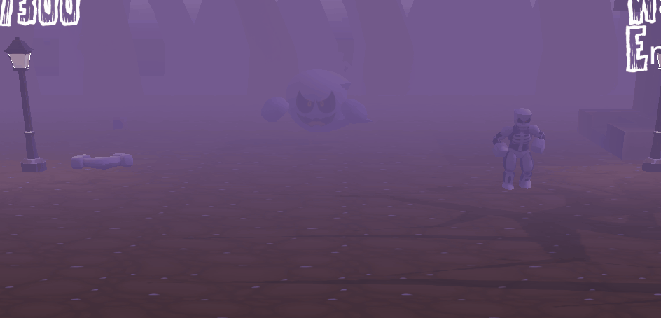
In Dead Man Jack, I worked on spawning and creating behaviors for the three main enemies in the game.
The zombies are mindless and just walk in a straight line towards the player.
The skeletons are similar, but after being defeated, their head will fall off and start jumping at the player.
The ghosts are special, instead of heading towards the goal, they will hang back for a bit, before disappearing and attempting to scare and stun the player.
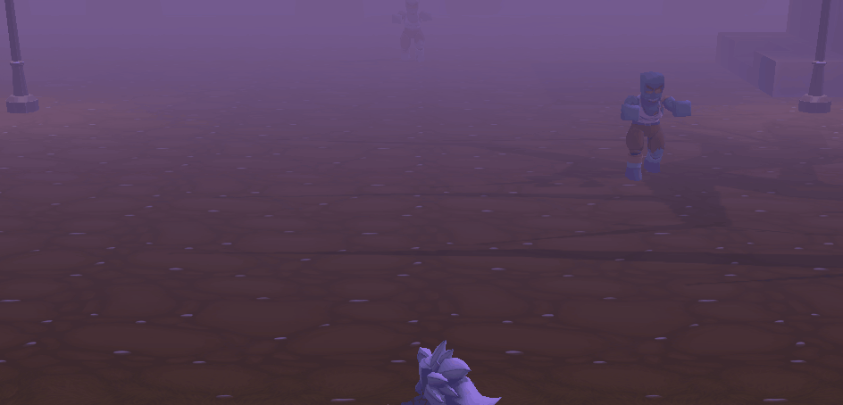 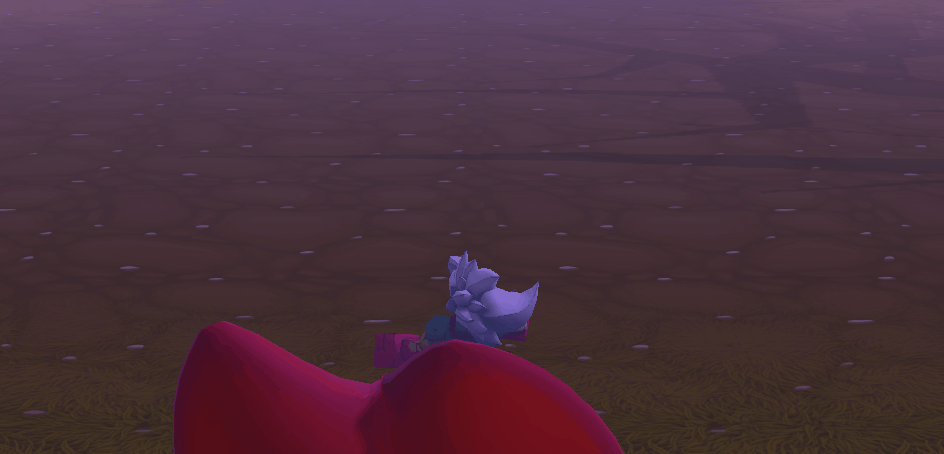
I was also responsible for menu managment. The game pauses when you hit the pause button, and when you die, a restart menu appears.
In Mike and Chip, I worked on most of chip's behaviors.
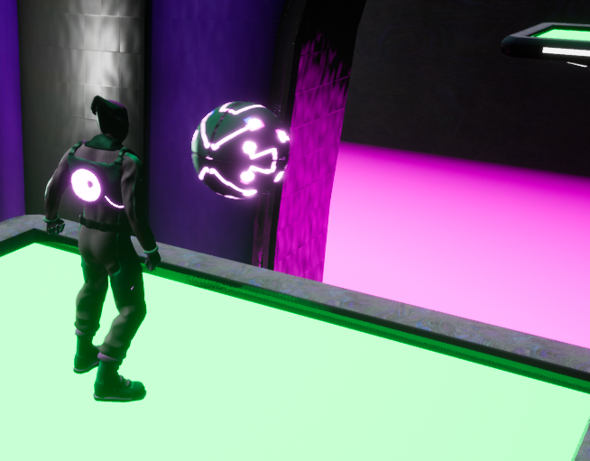
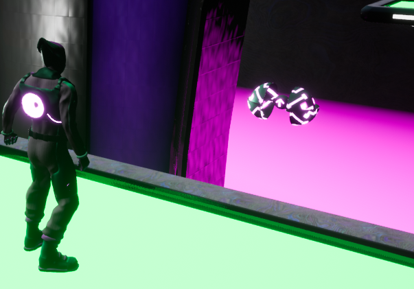
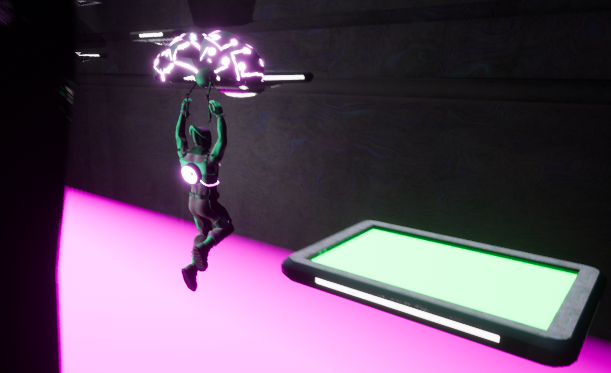
I made Chip's abilities. Chip can be thrown as a bounce pad and jumped on to gain height, as well as used as a way to glide.
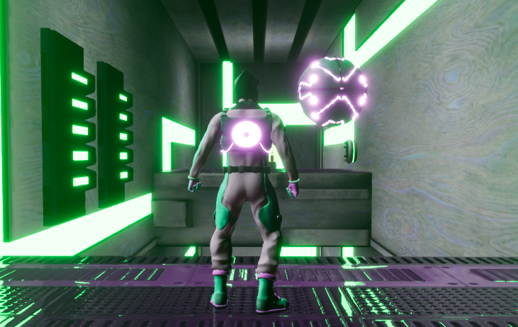
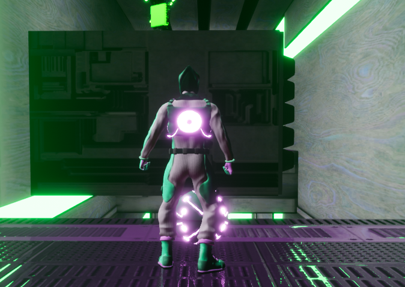
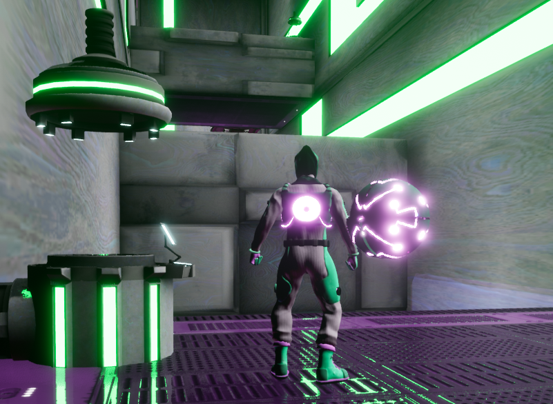
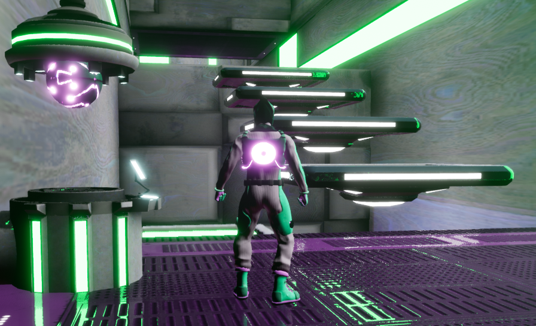
I worked on walls and platforms that can move, and even platforms that require you to use Chip to jump on.
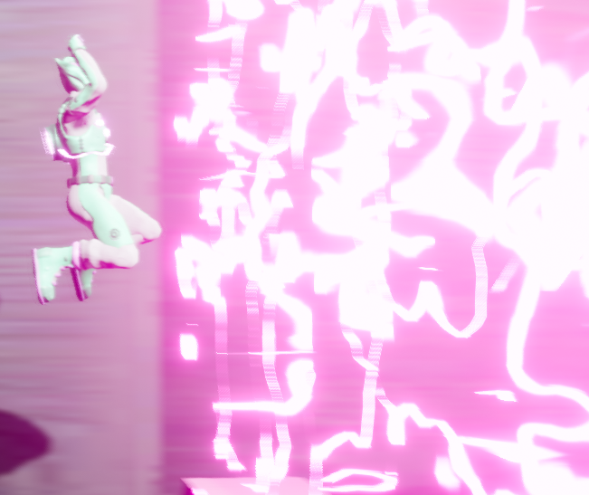
I also created walls that if you touch you'll die and have to respawn.